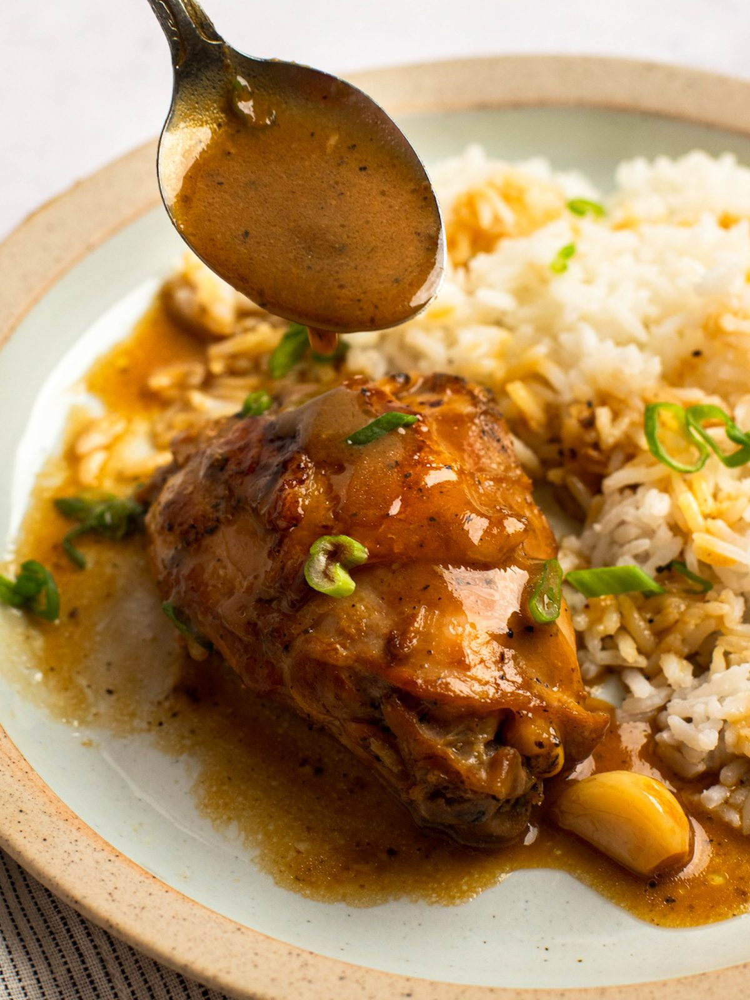

Grilled Chicken Adobo

Description
A hood classic really. Made with soy sauce, garlic, and vinegar.
Ingredients
- 1½ cups of soy sauce
- 1½ cups of water
- ¾ cup of vinegar
- 3 tablespoons of honey
- 1½ tablespoons of minced garlic
- 3 bay leaves
- ½ tablespoon of blackpepper
- 3 pounds of skinless boneless chicken thighs
Steps
- Preheat an outdoor grill to high heat and lightly oil grate
- In a large pot, mix soy sauce, water, vinegar, honey, garlic, bay leaves, and
pepper. Bring the mixture to a boil
- Place chicken into the pot. Reduce heat, cover, and cook for around 35 minutes.
- Remove chicken and discard bay leaves. Boil and reduce mixture until reduced
to 1½ cups
- Place chicken on preheated grill, for 5 minutes on each side until browned and crisp
- Serve with remaining soy sauce mixture